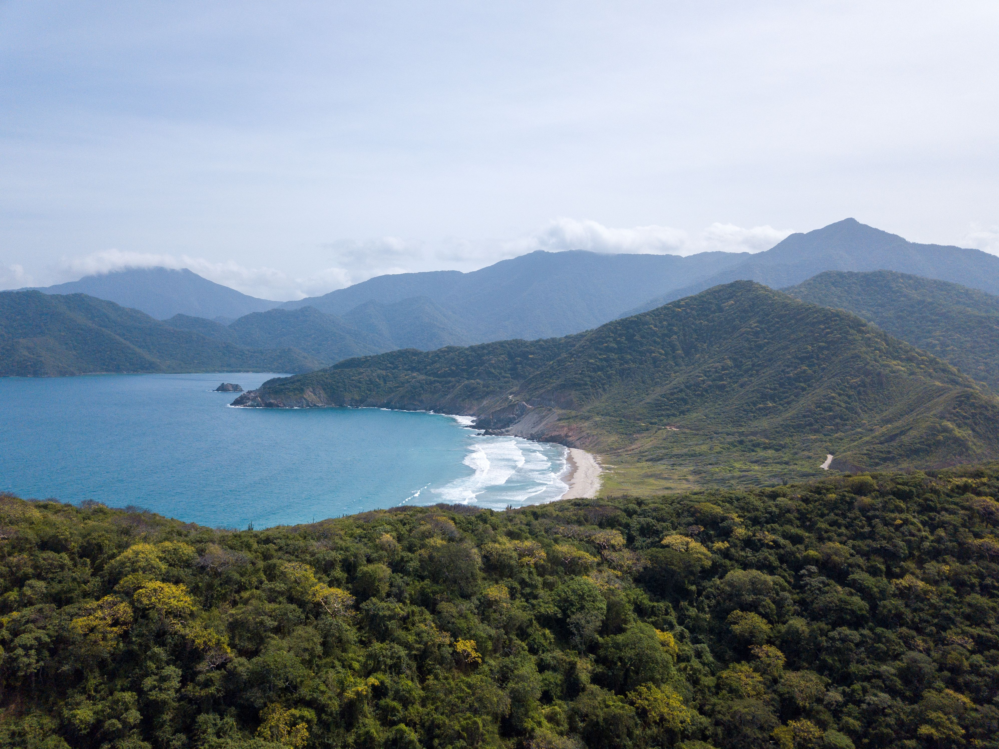
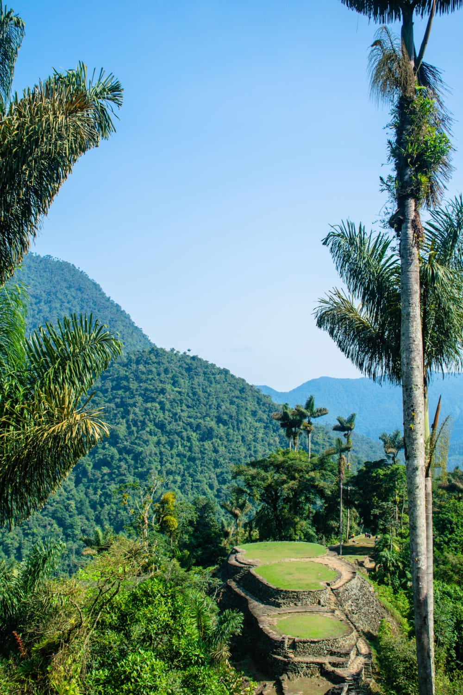
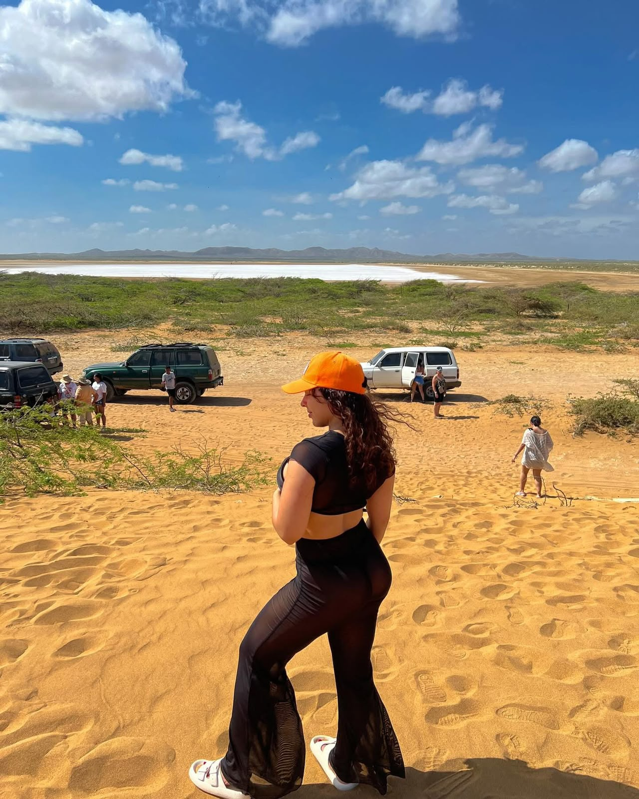
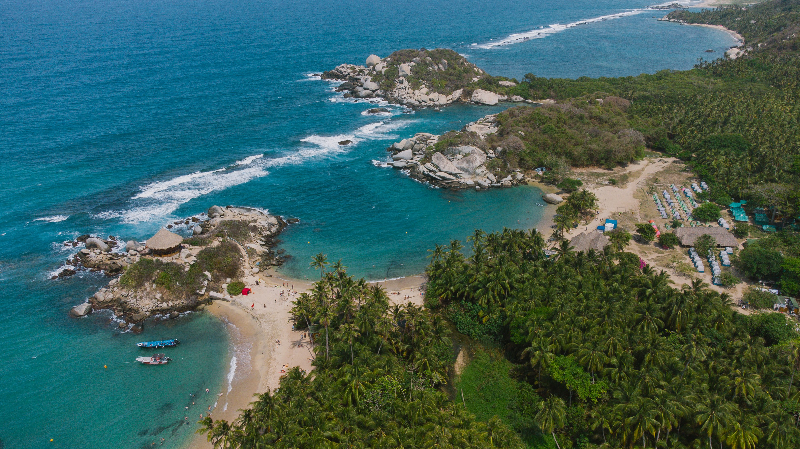
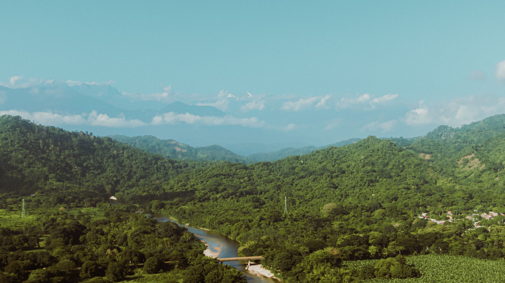
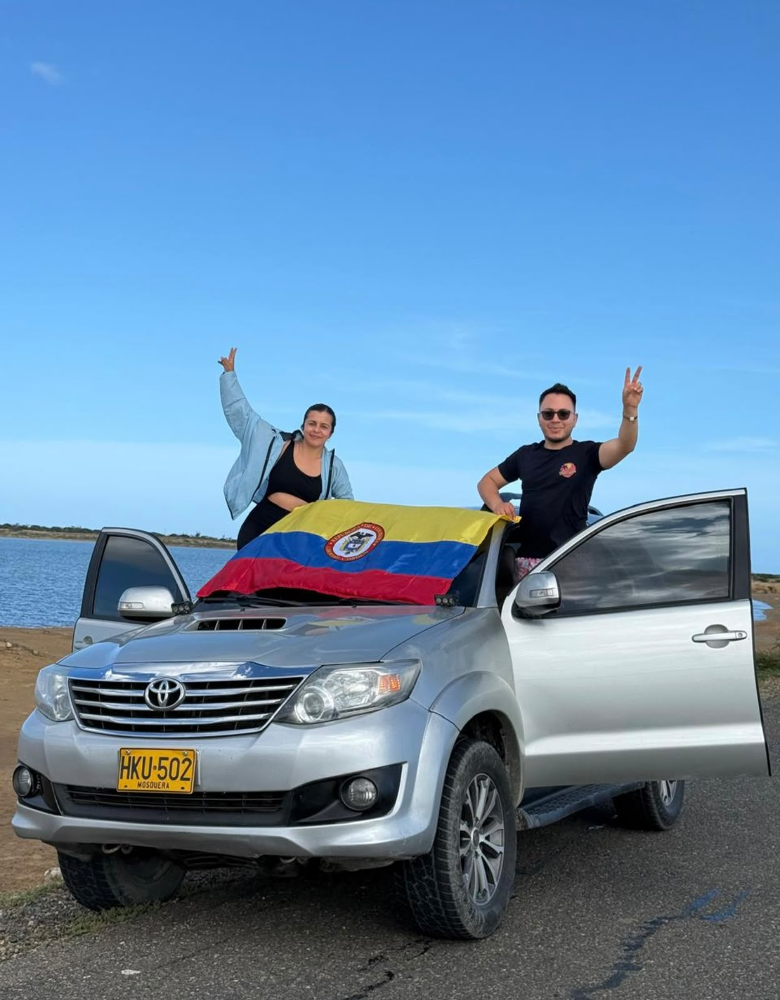

NaturalezaAventura Ancestral Tayrona
Descubre senderos, paisajes y la riqueza natural y cultural de uno de los lugares más especiales del Caribe.
Descubrir experiencia↗Explora ríos, montañas, playas y culturas ancestrales. Vive el norte de Colombia con experiencias que conectan contigo y con la naturaleza.
Desde la serenidad de un río hasta los paisajes más extraordinarios de la región. Encuentra una aventura a tu manera.

NaturalezaDescubre senderos, paisajes y la riqueza natural y cultural de uno de los lugares más especiales del Caribe.
Descubrir experiencia↗
ExpediciónUna travesía inolvidable entre montañas, caminos ancestrales y escenarios naturales únicos.
Descubrir experiencia↗
PaisajesColores, mar y desierto se encuentran en una experiencia llena de contrastes en La Guajira.
Descubrir experiencia↗ Mar y playa
Mar y playaDisfruta el paisaje costero, respira aire puro y contempla la belleza de playas rodeadas de naturaleza.
Descubrir experiencia↗
Mar cristalinoUn día para admirar las tonalidades del mar y disfrutar de un entorno natural privilegiado.
Descubrir experiencia↗
Aventura suaveConecta con el ritmo del agua y contempla la vegetación tropical desde una perspectiva diferente.
Descubrir experiencia↗
En WAYRAE VIP creemos que cada destino tiene una historia que merece ser vivida con respeto. Queremos acercarte a la naturaleza, las comunidades y la riqueza cultural del Caribe colombiano.
Organizamos experiencias con acompañamiento local y atención personalizada, para que cada recorrido sea tan especial como el lugar que visitas.
Queremos que disfrutes cada momento con la tranquilidad de contar con un equipo que conoce la región y cuida cada experiencia.
Conocimiento del territorio y pasión por compartirlo.
Experiencias pensadas con respeto por la naturaleza.
Opciones para distintos intereses y estilos de viaje.
Atención cercana para resolver tus dudas y orientarte.
La mejor parte de cada aventura es lo que queda en la memoria.
“Un recorrido precioso, con un guía muy amable y tiempo para disfrutar del río y de sus paisajes.”
“Una experiencia increíble. La atención fue cercana y pudimos disfrutar cada parada sin afanes.”
“Un servicio muy especial, con personas cordiales y una experiencia que recordaremos con mucho cariño.”
Cuéntanos qué te gustaría descubrir. Te ayudaremos a planear tu experiencia.